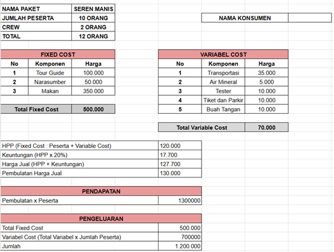

1. DESKRIPSI
- What (Apa)?
Wajit Mak Eroh merupakan salah satu UMKM khas priangan yang memberikan edukasi pada wisatawan mengenai pembuatan wajit. Produk unggulannya meliputi tiga varian wajit: wajit ketan, angleng, dan wajit singkong. Wajit ketan memiliki tekstur kenyal dengan rasa manis legit, angleng terbuat dari tepung ketan, kelapa, dan gula merah dibungkus daun jagung, sementara wajit singkong menggabungkan singkong parut dan gula merah untuk rasa manis gurih. Produk ini telah dikenal luas, tidak hanya di daerah asalnya, tetapi juga menjadi oleh-oleh khas yang populer hingga luar daerah, bahkan ke Sumatera. Harga wajit sangat terjangkau, yaitu Rp5.000 per cup berisi sepuluh potong, atau Rp 500 per potong. Dengan lokasi yang berada di desa yang asri, usaha ini menjaga kualitas dan keaslian produk, serta menjadi simbol kebanggaan kuliner lokal.
- Where (Dimana)?
Wajit Mak Eroh terletak di di Kampung Panyandungan, Dusun 2, Desa Cigalontang, Kabupaten Tasikmalaya.
- Why (Mengapa)?
Wajit Mak Eroh dijadikan sebagai salah satu destinasi wisata, dikarenakan selain wisatawan dapat mencicipi Wajit Mak Eroh, wisatawan dapat juga mendapatkan edukasi mengenai pembuatan wajit.
- When (Kapan)?
Produksi Wajit Mak Eroh dibuat setiap hari, tetapi disesuaikan dengan pesanan konsumen.
- Who (Siapa)?
Wajit Mak Eroh ini dapat di kunjungi oleh wisatawan di seluruh wilayah Indonesia Maupun Mancanegara. Dari kalangan remaja, orang dewasa, dan anak-anak.
- How (Bagaimana)?
Untuk menuju Lokasi Wajit Mak Eroh, wisatawan dapat menggunakan kendaraan roda dua maupun roda empat. Akan tetapi, untuk menuju rumah produksi wisatawan dapat mengaksesnya dengan berjalan kaki.
- Mengetahui makanan tradisional Desa Cigalontang
- Mengetahui tradisi dan budaya Desa Cigalontang
- Mengetahui cara pembuatan wajit
- Mencicipi wajit secara langsung
- Membawa pengalaman baru yang tidak ada di tempat lain
3. JADWAL PERJALANAN
| No. | Waktu | Kegiatan |
|---|---|---|
| 1 | 08.00 - 08.30 WIB | Ticketing dan Ramah Tamah di Desa |
| 2 | 08.30 - 08.45 WIB | Pemberangkatan menuju Wajit Mak Eroh |
| 3 | 08.45 - 09.00 WIB | Briefing bersama Tour Guide |
| 4 | 09.00 - 13.00 WIB | Kegiatan Seren Manis |
| 5 | 13.00 - 14.00 WIB | Ngadéndang Rasa |
Paket Termasuk:
- Tiket
- Narasumber
- Tour Guide
- Transportasi
- P3K
- Air Mineral
- Makan Siang
- Wajit yang dicicipi
- Wajit yang dibawa
5. MENGHITUNG DAN MENENTUKAN HARGA

6. TATA TERTIB KEGIATANa. Kumpul tepat waktu sesuai Tour Guide
b. Tidak membuang sampah sembarangan
c. Tidak boleh membawa minuman beralkohol
d. Tidak merusak alam
e. Sopan santun sesuai aturan budaya Masyarakat
f. Tidak boleh membawa senjata tajam
g. Berinteraksi baik dengan warga sekitar
7. PERLENGKAPAN YANG HARUS DIBAWA
a. Obat-obatan Pribadi
b. Alat Sholat
8. SYARAT DAN KETENTUAN BERLAKU
a. Pemesanan tiket minimal H-3 sebelum pemberangkatan wisatawan
b. Peserta dalam satu grup minimal 10 orang
c. Jika jumlah wisatawan kurang dari 10 orang maka berlaku harga satu grup
d. Wajib membayar DP minimal 50%
e. Pembayaran dilakukan sesuai batas yang telah ditentukan, apabila melewati batas pembayaran maka wisatawan dianggap melakukan pembatalan Tidak ada pengembalian dana bagi wisatawan yang melakukan pembatalan
9. PERTANYAAN YANG SERING DIAJUKAN
- Apakah paket ini cocok untuk perseorangan?
Jawaban: Paket ini dapat dilakukan oleh perseorangan tetapi dengan harga yang di sesuaikan, apabila menginginkan pembiayaan yang sesuai dengan pembiayaan rombongan maka di ikut sertakan dengan peserta yang lain.
- Apakah paket wisata ini ramah untuk anak-anak dan keluarga?
Jawaban: Paket wisata ini cocok untuk anak-anak dan keluarga karena akan memberikan edukasi mengenai cara pembuatan wajit. Akan tetapi harus berada di dalam pengawasan.